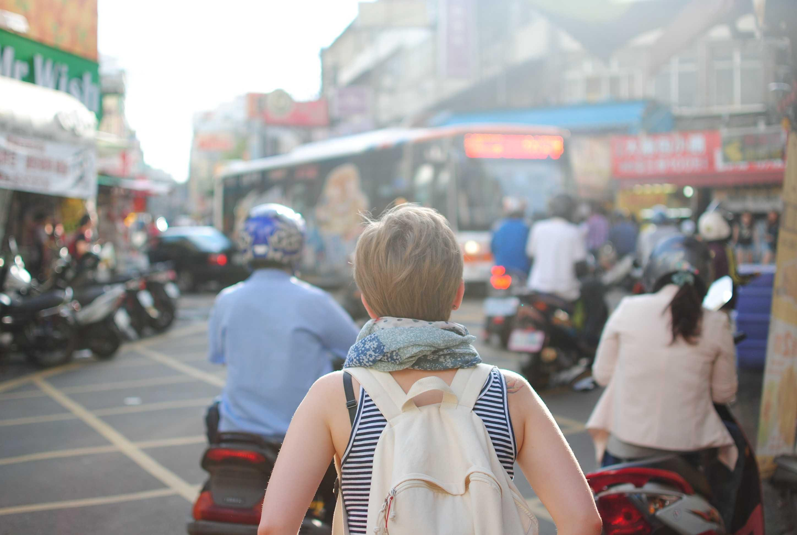

My resume

Summary
I have been actively working in the UK since 2015 and undertaken a variety of jobs, mostly in the customer service field.
I am currently in the process of learning basic code skills in order to progress my career towards web developing.
Education
- 2018-2021: BA Hons in Japanese, SOAS University of London (1:1)
- 2007-2012: Professional Catering school
Work experience
- 2019-2021: Customer Advisor, Harry Potter Shop in Kings Cross
- 2017-2019: Customer Assistant, Lidl UK
- 2016-2017: Shift Manager, Caffe Nero
Skills
- BSL Certificate Level 1
- Academic IELTS
- Certified first aider